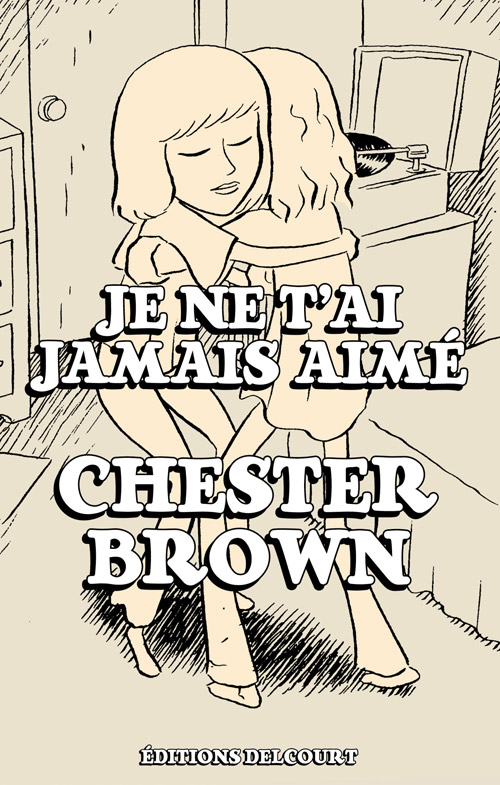
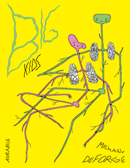
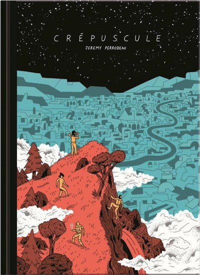

After a few years in charge of digital communication in comic books and illustration publishing, I'm improving new skills as a programmer at Le Wagon, skills that can be completed by my graphical background !
|  |
Je ne t'ai jamais aiméChester BrownChester Brown, adolescent brillant mais un peu gauche, fait l'apprentissage des relations amoureuses. Il ne sait pas encore aimer et n'est pas aidé en la matière. Autour de lui, l'école et ses vexations, des copains lourdingues. À la maison, ce n'est guère mieux, avec une mère schizophrène, bientôt internée, à l'affection si troublante : "Je suis ta mère. Si tu ne m'aimes pas, qui peux-tu aimer ?". See more here. |
|  |
Big KidsMichael DeForgeÇa commence presque comme du Perec : des souvenirs qui remontent, une énumération de moments, de gens, de sensations… puis ça vire du côté de Larry Clark quand celui-ci dresse par ses photos le portrait d’une certaine jeunesse. Pour l’adolescent héros de Big Kids, du jour en lendemain, un changement s’opère (on n’en dira pas plus) et soudainement, le goût a une forme, la musique quatre pattes qui vous court sur l’épaule, et plus rien ne ressemble au monde d’hier. Dans ce récit, que l’on pourra lire comme une métaphore de l’adolescence, DeForge réussit à parler avec une acuité rare de cette étrange période où tout se bouscule, cette période qui ressemble à un perpétuel combat et où les victoires sont trop rares, cette période pleine de choix qu’il faut faire et de contradictions qu’il faut démêler. See more here. |
|  |
CrépusculeJérémy PerrodeauPaul, Sofia, Karl et Ottö, deux agents humains accompagnés de deux androïdes, s’aventurent sur une planète lointaine à la recherche d’une équipe scientifique disparue… Sur les arbres, les plantes, les roches, des excroissances géométriques défigurent le paysage, symptômes d’une expérience de grande ampleur ayant mal tourné. Bientôt piégés par une nature hostile, soumis à de violentes tempêtes gravitationnelles et de mystérieuses distorsions temporelles, nos quatre héros n’auront d’autre choix que d’avancer jusqu’à l’origine du phénomène. Ils plongent alors dans une odyssée qui les fera braver la Matière, l’Espace et le Temps. See more here. |